ASP.NET Core 2.0 Authentication and Authorization System Demystified
There is a component that exists in ASP.NET Core that conjures up an enchanted shield that protects portions (or all) of your website from unauthorized access. Like many people, I have used this component from the beginning of my journey, but have never understood it. It was conjured up by a wizard and provided a magical barrier between my website and the world. That’s not how it really works, of course, but without the right knowledge, it might as well.
While trying to figure out how to fix an error in my code, I happened to ask the right question at the right time on the right Slack channel. David Fowler, who happens to be one of the core maintainers of aspnetcore, decided to give everyone present a lesson on how the authentication system (auth system, from now on) works in ASP.NET Core 2.0. This article is based on the information in his impromptu lesson.
I later found an article by Andrew Lock going into details about the claims portion and, after reading his article and doing slightly more research, added the section on Identity.
Understanding the system first requires understanding its components and behaviors. They can be broken down into identity, verbs, authentication handlers, and middleware. I will cover each of these individually and then demonstrate how they work together in an example auth request. Since ASP.NET Core's most common authentication handler is the Cookies auth handler, these examples will use cookie authentication.
Identity§
Key to understanding how authentication works is to first understand what an identity is in ASP.NET Core 2.0. There are three classes which represent the identity of a user: Claim, ClaimsIdentity, and ClaimsPrincipal
Claims§
A Claim represents a single fact about the user. It could be the user's first name, last name, age, employer, birth date, or anything else that is true about the user. A single claim will contain only a single piece of information. A claim representing something about a user John Smith could be his first name: John. A second claim would be his last name: Smith.
Claims are represented by the Claim class in ASP.Net Core. It's most common constructor accepts two strings: type and value. The 'type' parameter is the name of the claim, while the value is the information the claim is representing about the user.
This code will create two new claims. One of type 'FullName' with a value of 'Dark Helmet', and a second of type ClaimTypes.Email and a value of 'dark.helmet@spaceballs.com'. There is a ClaimsType class that contains many string constants that represent industry standard claim types. These are all in URI format, but claim types can be any string.
//This claim uses a standard string
new Claim("FullName","Dark Helmet");
//This claim type expands to 'http://schemas.xmlsoap.org/ws/2005/05/identity/claims/emailaddress'
new Claim(ClaimTypes.Email, "dark.helmet@spaceballs.com");
ClaimsIdentity§
An Identity represents a form of identification or, in other words, a single way of proving who you are. In real life this could be a driver's license. In ASP.Net Core, it is a ClaimsIdentity. This class represents a single form of digital identification.
A single instance of a ClaimsIdentity can be authenticated or not authenticated. According to Andrew Lock's Introduction to Authentication with ASP.NET Core, simply setting the AuthenticationType will automatically ensure the IsAuthenticated property is true. This is because if you have authenticated the identity in any way, then it must, by definition, be authenticated.
An unknown person walking up to you and making various claims about theirself and their life would be equivilent to an unauthenticated ClaimsIdentity. Lock writes that this may be useful to allow guest shopping carts (prior to a sign in, perhaps) and similar use cases.
A driver's license contains many claims about its subject: first and last names, birthdate, hair and eye colors, height, and others. Similarly, a ClaimsIdentity can contain numerous claims about a user.
ClaimsPrincipal§
A Principal represents the actual user. It can contain one or more instances of ClaimsIdentity, just like in life a person may have a driver's license, concealed-carry permit, social security card, and a passport. Each of the identities is used for a different purpose and may contain a unique set of claims, but they all identify the same user in some form or another.
To sum up, a ClaimsPrincipal represents a user and contains one or more instances of ClaimsIdentity, which in turn represent a single form of identification and contain one or more instances of Claim, which represents a single piece of information about a user. The ClaimsPrincipal is what the HttpContext.SignInAsync method accepts and passes to the specified AuthenticationHandler.
Verbs§
There are 5 verbs (these can also be thought of as commands or behaviors) that are invoked by the auth system, and are not necessarily called in order. These are all independent actions that do not communicate among themselves, however, when used together allow users to sign in and access pages otherwise denied. Here is a very brief description of what each verb is responsible for. We’ll go into more depth further in the article.
- Authenticate
- Gets the user’s information if any exists (e.g. decoding the user’s cookie, if one exists)
- Challenge
- Requests authentication by the user (e.g. showing a login page)
- SignIn
- Persists the user’s information somewhere (e.g. writes a cookies)
- SignOut
- Removes the user’s persisted information (e.g. deletes the cookies)
- Forbid
- Denies access to a resource for unauthenticated users or authenticated but unauthorized users (e.g. displaying a “not authorized” page)
Authentication Handlers§
Authentication handlers are components that actually implement the behavior of the 5 verbs above. The default auth handler provided by ASP.NET Core is the Cookies authentication handler which implements all 5 of the verbs. It is important to note, however, that an auth handler is not required to implement all of the verbs. Oauth handlers, for instance, do not implement the SignIn verb, but rather pass off that responsibility to another auth handler, such as the Cookies auth handler.
Authentication handlers must be registered with the auth system in order to be used and are associated with schemes. A scheme is just a string that identifies a unique auth handler in a dictionary of auth handlers. The default scheme for the Cookies auth handler is “Cookies”, but it can be changed to anything. Multiple auth handlers can be used side by side, and sometimes (like in the earlier example of the Oauth handlers) use functionality provided by other auth handlers.
Authentication Middleware§
A middleware is a module that can be inserted into the startup sequence and is run on every request. The one this article is concerned with is the authentication middleware. This code checks if a user is authenticated (or not) on every request. Recall that the Authenticate verb gets the user info, but only if it exists. When the request is run, the authentication middleware asks the default scheme auth handler to run its authentication code. The auth handler returns the information to the authentication middleware which then populates the HttpContext.User object with the returned information.
Authentication and Authorization Flow§
All of these components must be used together in the auth system in order to successfully authenticate and authorize a user to access a resource. The process begins with the unauthenticated user sending a request for a resource that requires authorization to access.
Here is an example flow for cookies authentication:

- The request arrives at the server.
- The authentication middleware calls the default handler's Authenticate method and populates the HttpContext.User object with any available information.
- The request arrives at the controller action.
- If the action is not decorated with the
[Authorize]attribute, display the page and stop here. - If the action is decorated with
[Authorize], the auth filter checks if the user was authenticated. - If the user was not, the auth filter calls Challenge, redirecting to the appropriate signin authority.
- Once the signin authority directs the user back to the app, the auth filter checks if the user is authorized to view the page.
- If the user is authorized, it displays the page, otherwise it calls Forbid, which displays a 'not authorized' page.
Code Example§
This example is not intended to be a fully functional web application. It uses a simple POCO to store usernames and passwords, is not a secure or functional way of writing a web application, and does not guarantee proper execution outside of the simple cases of signing in and out. The intention is to illustrate the authentication flow through a code example. In this example I've removed all code unrelated to the topic.
class Startup§
When the app first starts it triggers the ConfigureServices() and Configure() methods in the Startup class. In aspnetcore 2.0 authentication handlers are registered and configured entirely in the ConfigureServices method, and there is a single call to turn them all on in the Configure method.
public void ConfigureServices(IServiceCollection services) {
//Adds cookie middleware to the services collection and configures it
services.AddAuthentication(CookieAuthenticationDefaults.AuthenticationScheme)
.AddCookie(options => options.LoginPath = new PathString("/account/login"));
...
}
public void Configure(IApplicationBuilder app, IHostingEnvironment env) {
...
//Adds the authentication middleware to the pipeline
app.UseAuthentication();
...
}
In ConfigureServices the AddAuthentication method is called to add the authentication middleware to the services collection. There is a chained method call to AddCookie that adds a Cookies authentication handler with an option configured to the authentication middlware.
In the Configure method, the method UseAuthentication is called to add the authentication middleware to the execution pipeline. This is what allows the authentication middleware to actually run on every request.
class ApplicationUser§
The app needs a representation of a user. This simple class stores a username and password for a user.
public class ApplicationUser {
public string UserName { get; set; }
public string Password { get; set; }
public ApplicationUser() { }
public ApplicationUser(string username, string password) {
this.UserName = username;
this.Password = password;
}
}
class AccountController§
In order to do anything meaningful with the authentication middleware and handler, some actions are needed. Below is an MVC Controller called AccountController which contains methods that do the work of signing in and out. This class handles the verbs SignIn and SignOut through the HttpContext's convenience methods, which in turn invoke the SignInAsync and SignOutAsync methods on the specified or default auth handler.
public class AccountController : Controller {
//A very simplistic user store. This would normally be a database or similar.
public List<ApplicationUser> Users => new List<ApplicationUser>() {
new ApplicationUser { UserName = "darkhelmet", Password = "vespa" },
new ApplicationUser{ UserName = "prezscroob", Password = "12345" }
};
public IActionResult Login(string returnUrl = null) {
TempData["returnUrl"] = returnUrl;
return View();
}
[HttpPost]
public async Task<IActionResult> Login(ApplicationUser user, string returnUrl = null) {
const string badUserNameOrPasswordMessage = "Username or password is incorrect.";
if (user == null) {
return BadRequest(badUserNameOrPasswordMessage);
}
var lookupUser = Users.FirstOrDefault(u => u.UserName == user.UserName);
if (lookupUser?.Password != user.Password) {
return BadRequest(badUserNameOrPasswordMessage);
}
var identity = new ClaimsIdentity(CookieAuthenticationDefaults.AuthenticationScheme);
identity.AddClaim(new Claim(ClaimTypes.Name, lookupUser.UserName));
await HttpContext.SignInAsync(CookieAuthenticationDefaults.AuthenticationScheme, new ClaimsPrincipal(identity));
if(returnUrl == null) {
returnUrl = TempData["returnUrl"]?.ToString();
}
if(returnUrl != null) {
return Redirect(returnUrl);
}
return RedirectToAction(nameof(HomeController.Index), "Home");
}
public async Task<IActionResult> Logout() {
await HttpContext.SignOutAsync(CookieAuthenticationDefaults.AuthenticationScheme);
return RedirectToAction(nameof(HomeController.Index), "Home");
}
}
First, the class contains a List<string> Users that takes the place of the user store and holds two users. This is not a good method to use in production but makes it easy to demonstrate the authentication code without added complexity.
public List<ApplicationUser> Users => new List<ApplicationUser>() {
new ApplicationUser { UserName = "darkhelmet", Password = "vespa" },
new ApplicationUser{ UserName = "prezscroob", Password = "12345" }
};
There are also two overloaded Login methods. The first one takes a string returnUrl and stores it in the controller's TempData repository. It then returns the default view for the action.
public IActionResult Login(string returnUrl = null) {
TempData["returnUrl"] = returnUrl;
return View();
}
The second Login method does the work of logging in a user and takes an ApplicationUser object and a string returnUrl. This method is also decorated with the [HttpPost] attribute which means it can not be called without an http POST action.
The method first checks to ensure there was a user object submitted, and that the username and password match one of the users in the user store.
const string badUserNameOrPasswordMessage = "Username or password is incorrect.";
if (user == null) {
return BadRequest(badUserNameOrPasswordMessage);
}
var lookupUser = Users.FirstOrDefault(u => u.UserName == user.UserName);
if (lookupUser?.Password != user.Password) {
return BadRequest(badUserNameOrPasswordMessage);
}
If both of those conditions are true, it creates a new ClaimsIdentity. The constructor, in this case, is setting the AuthenticationType property of the ClaimsIdentity. According to Andrew Lock, the AuthenticationType property can be any string and represents how the identity was verified.
In this case, I set the AuthenticationType to the cookies authentication scheme because I am using cookies authentication. However, at this step it does not need to be set to that. I could just as easily set it to "password" or "multipass", or anything else. When using the identity later I could use this property to verify that I trust the authentication method used to authenticate this identity.
var identity = new ClaimsIdentity(CookieAuthenticationDefaults.AuthenticationScheme);
identity.AddClaim(new Claim(ClaimTypes.Name, lookupUser.UserName));
The method then calls HttpContext.SignInAsync(), passing in the cookies authentication scheme and a new ClaimsPrincipal created from the identity that was created a few lines above.
await HttpContext.SignInAsync(CookieAuthenticationDefaults.AuthenticationScheme, new ClaimsPrincipal(identity));
Lastly, the method determines the returnUrl, if any, and redirects the user to either the returnUrl or the home page if there isn't one.
if(returnUrl == null) {
returnUrl = TempData["returnUrl"]?.ToString();
}
if(returnUrl != null) {
return Redirect(returnUrl);
}
return RedirectToAction(nameof(HomeController.Index), "Home");
Login.cshtml§
The AccountController exists, but the users need a way to see the login form and send their credentials to the Login action of the controller. This view will solve both of those problems.
@model ApplicationUser
@{
<form asp-antiforgery="true" asp-controller="Account" asp-action="Login">
User name: <input name="username" type="text" />
Password: <input name="password" type="password" />
<input name="submit" value="Login" type="submit" />
<input type="hidden" name="returnUrl" value="@TempData["returnUrl"]" />
</form>
}
class HomeController§
Now that there is an AccountController to log users in and out, there must be something that uses it. This is the HomeController's Members method. Notice the [Authorize] attribute has been added.
[Authorize]
public IActionResult Members() {
return View();
}
The [Authorize] attribute decorating this action method will cause the authorization filter to run. That filter will determine if a user has been authenticated and, if not, issue the Challenge verb through the authentication handler, which will prompt the user to log in.
Members.cshtml§
With almost any new controller action, a view will be needed to show the user something. This is what the Members view looks like behind the curtains.
@{
ViewBag.Title = "Members Only";
}
<h2>@ViewBag.Title</h2>
<p>You must be a member. Congratulations, @User.Identity.Name, on your membership!</p>
_Layout.cshtml§
Lastly, a link or button to let the user click to log in or out would be very helpful. The aspnetcore templates tend to use a logout form that contains a link that uses javascript to submit the form with the http POST method. This is likely more secure than the example in the code below, but for the purposes of this example, a simple link and http GET will suffice.
The following code was added to the bootstrap menu in the _Layout.cshtml file and will appear on every page using that layout as a template. It provides both login and logout options.
@if(User.Identity.IsAuthenticated) {
<li><a asp-area="" asp-controller="Account" asp-action="Logout">Logout</a></li>
} else {
<li><a asp-area="" asp-controller="Account" asp-action="Login">Login</a></li>
}
Conclusion§
The auth system is interesting and well designed. It's very extensible and will easily work with custom authentication handlers. Understanding how this system works under the hood is the first step in using it beyond the template defaults. All kinds of custom authentication processes are possible by using the components themselves instead of just relying on the templates and convenience methods. Now go write code.
Changelog§
- 18 April 2018
- Updated some parts of the text to add clarity
- Clarified the AuthenticationType property of ClaimsIdentity
- Added explanation of Claim, ClaimsIdentity, and ClaimsPrincipal
- Updated code samples to match the sample project
- Fixed the value of the "returnUrl" input in the Login.cshtml example
- Was '@Model', which is an ApplicationUser object
- Now '@TempData["returnUrl"]', which is the string that contains the actual URL needed
- Fixed typos
- Changed the Authorized page example from the About page to a Members page and added a view to go with it
- Updated some parts of the text to add clarity